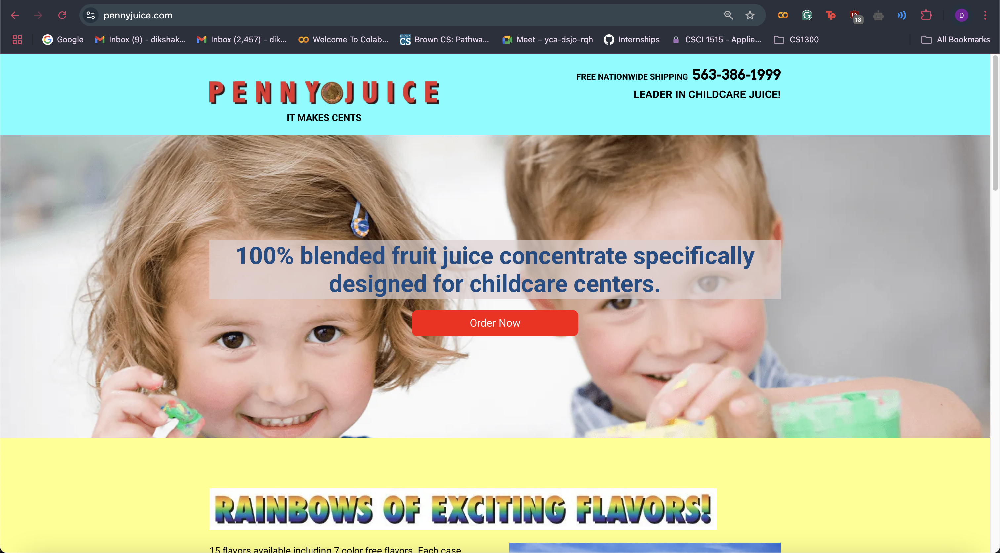
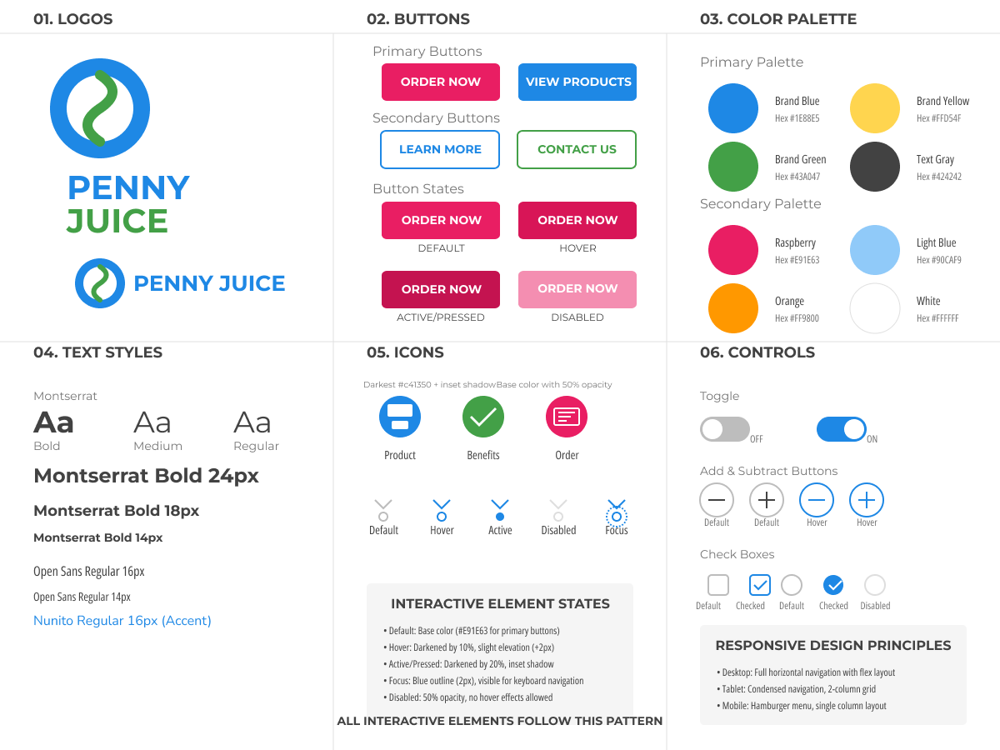
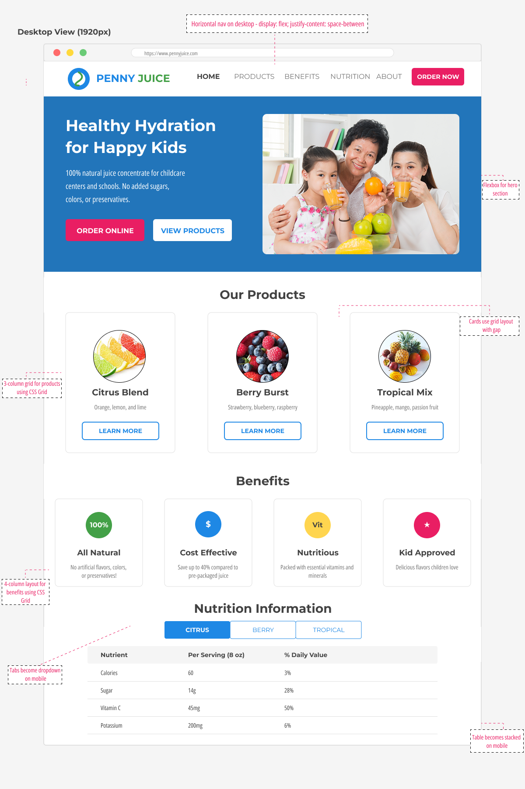
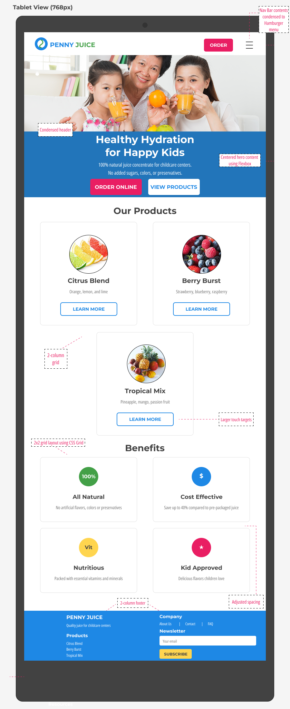
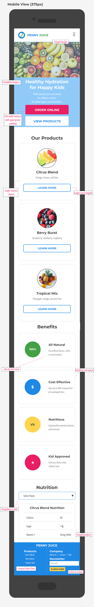

Project Overview
This case study explores the process of redesigning the Penny Juice website, a business-oriented site selling concentrated juice to childcare centers. The website had significant usability issues despite its simple goal, creating an opportunity for meaningful improvement through responsive redesign.
Problem Identification
Analyzing usability issues and accessibility problems in the existing interface
Visual Design
Creating style guide and wireframes for multiple screen sizes
Implementation
Building responsive website with semantic HTML and CSS
Usability Analysis
The original Penny Juice website suffered from several critical usability and accessibility issues that impacted user experience.

Learnability Issues
- Animated GIFs and flashing elements create a confusing homepage experience
- Key information is buried beneath decorative elements
- Overlapping, illogically sequenced content categories confuse site navigation
Efficiency Problems
- No direct search functionality, forcing menu navigation for specific information
- Order forms have confusing layouts and require unnecessary information
- Inconsistent page structures force users to relearn the interface repeatedly
Conceptual Model Issues
- Childlike aesthetic clashes with B2B e-commerce purpose for childcare professionals
- Navigation structure fails to match how childcare professionals purchase juice concentrate
- Lack of visual indicators for visited sections or completed actions
Accessibility Issues (WebAIM WAVE Results)
- Multiple images missing alternative text, making content inaccessible to screen readers
- Poor color contrast between text and background in multiple sections
- Form fields lack proper labels, creating barriers for users with screen readers
- Several links have no descriptive text
- Lack of proper heading hierarchy and structural elements
Visual Design
Based on the identified issues, I created a comprehensive visual design system that balances professionalism with child-friendly elements.
Style Guide

Color Strategy
The color palette balances professionalism with child-friendly elements. The primary blue provides trust and stability, while the accent colors create warmth and energy.
Typography
Montserrat was selected as the primary font for its clean legibility and professional appearance, creating a clear information hierarchy.
Component Design
UI components are designed for consistency across devices with clear interactive states and accessible contrast ratios.
Responsive Mockups

Desktop
Optimized for large screens with expanded navigation and multi-column layout

Tablet
Adapted for medium-sized screens with condensed navigation

Mobile
Streamlined for smaller screens with touch-friendly elements
Responsive Design Decisions
A detailed analysis of how specific elements adapt across different screen sizes and how these changes enhance the user experience.
Responsive Strategy Overview
The redesign follows a mobile-first approach with progressive enhancement to ensure optimal user experience across all devices. Key decisions were made to transform the interface at specific breakpoints where the layout would otherwise break or become difficult to use.
Mobile (375px)
- Single column layout prioritizes content
- Hamburger menu conserves screen space
- Larger touch targets (min 44×44px) for finger navigation
- Stack buttons vertically in hero section
Tablet (768px)
- Two-column layout for products and benefits
- Condensed navigation with key items visible
- Improved information density
- Horizontal display for key action buttons
Desktop (1920px+)
- Full horizontal navigation with all options visible
- Three-column layout for products
- Side-by-side content in hero section
- Optimized for quick scanning and decision-making
Reflections & Learnings
This redesign project provided valuable insights into creating effective, user-centered web experiences.
Balancing Aesthetics and Function
Creating a design that balances child-friendly appeal with professional B2B functionality required careful consideration of color, typography, and visual elements.
Responsive Design Challenges
Developing layouts that adapt gracefully across different screen sizes required thinking beyond simply shrinking content.
Accessibility as a Priority
Addressing accessibility wasn't simply a checklist item but a fundamental design principle that improved the experience for all users.
The Value of Style Guides
Creating a comprehensive style guide early in the process proved invaluable for maintaining consistency throughout the implementation.
Explore the Redesigned Website
Experience the improved Penny Juice website with enhanced usability, accessibility, and responsive design.
View Redesigned Website